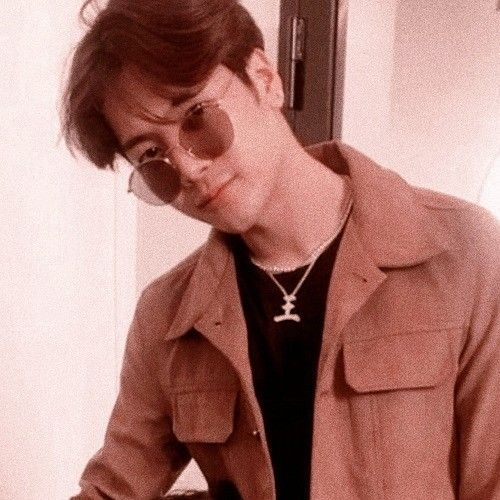

Jackson Wang Quote
"Don't worry if you're not where you want to be yet. Great things take time."-Jackson Wang, Got7

Jae Park Quote
"What is beautiful is only beautiful if you want it to be beautiful"-Jae Park, Day6, GRAVITY 2019 World Tour

Young K/Brian Quote
"Even if you didin't make it, it's not the end of the world. As long as you know you tried hard, that's all that matters."-Young K, Day6

Kim Namejoon Quote
"If you want to love others, you should love yourself first."-RM, BTS

Lee Fleix Quote
"You're not alone and we are all fighting together. Go at your own pace and we'll rise to the top as one"-Lee Felix, Stray Kids, My Pace

Bang Chan/Christopher Bang Quote
"If you fell down yesterday, stand up today"-Bang Chan, Stray Kids.

Mark Lee Quote
"Like the possibility of all those possibilities being possible is just another possibility that can possibly happen."-Mark Lee, NCT

Johnny Suh Quote
"Just because you're trash doesn't mean you can't do great things. It's called Garbage can, not Garbage cannot."-Johnny Suh, NCT